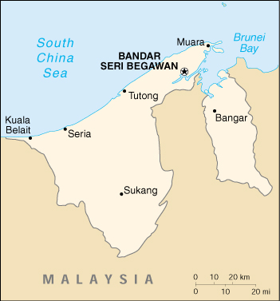

![[Country Flag of Brunei]](../flags/bx-lgflag.jpg)
| Brunei |
|
         |  | |
| Introduction |
Background: Although greatly reduced in size since its heyday of the 16th century, the Sultanate of Brunei sits atop extensive petroleum and natural gas fields, the source of one of the highest per capita GDPs in the less developed countries.
| Geography |
Location: Southeastern Asia, bordering the South China Sea and Malaysia
Geographic coordinates: 4 30 N, 114 40 E
Map references: Southeast Asia
Area:
total:
5,770 sq km
land:
5,270 sq km
water:
500 sq km
Area - comparative: slightly smaller than Delaware
Land boundaries:
total:
381 km
border countries:
Malaysia 381 km
Coastline: 161 km
Maritime claims:
exclusive economic zone:
200 nm or to median line
territorial sea:
12 nm
Climate: tropical; hot, humid, rainy
Terrain: flat coastal plain rises to mountains in east; hilly lowland in west
Elevation extremes:
lowest point:
South China Sea 0 m
highest point:
Bukit Pagon 1,850 m
Natural resources: petroleum, natural gas, timber
Land use:
arable land:
1%
permanent crops:
1%
permanent pastures:
1%
forests and woodland:
85%
other:
12% (1993 est.)
Irrigated land: 10 sq km (1993 est.)
Natural hazards: typhoons, earthquakes, and severe flooding are very rare
Environment - current issues: seasonal smoke/haze resulting from forest fires in Indonesia
Environment - international agreements:
party to:
Endangered Species, Law of the Sea, Ozone Layer Protection, Ship Pollution
signed, but not ratified:
none of the selected agreements
Geography - note: close to vital sea lanes through South China Sea linking Indian and Pacific Oceans; two parts physically separated by Malaysia; almost an enclave of Malaysia
| People |
Population: 336,376 (July 2000 est.)
Age structure:
0-14 years:
31% (male 53,812; female 51,628)
15-64 years:
66% (male 118,207; female 103,819)
65 years and over:
3% (male 4,317; female 4,593) (2000 est.)
Population growth rate: 2.17% (2000 est.)
Birth rate: 20.81 births/1,000 population (2000 est.)
Death rate: 3.39 deaths/1,000 population (2000 est.)
Net migration rate: 4.25 migrant(s)/1,000 population (2000 est.)
Sex ratio:
at birth:
1.06 male(s)/female
under 15 years:
1.04 male(s)/female
15-64 years:
1.14 male(s)/female
65 years and over:
0.94 male(s)/female
total population:
1.1 male(s)/female (2000 est.)
Infant mortality rate: 14.84 deaths/1,000 live births (2000 est.)
Life expectancy at birth:
total population:
73.58 years
male:
71.23 years
female:
76.06 years (2000 est.)
Total fertility rate: 2.47 children born/woman (2000 est.)
Nationality:
noun:
Bruneian(s)
adjective:
Bruneian
Ethnic groups: Malay 62%, Chinese 15%, indigenous 6%, other 17%
Religions: Muslim (official) 67%, Buddhist 13%, Christian 10%, indigenous beliefs and other 10%
Languages: Malay (official), English, Chinese
Literacy:
definition:
age 15 and over can read and write
total population:
88.2%
male:
92.6%
female:
83.4% (1995 est.)
| Government |
Country name:
conventional long form:
Negara Brunei Darussalam
conventional short form:
Brunei
Data code: BX
Government type: constitutional sultanate
Capital: Bandar Seri Begawan
Administrative divisions: 4 districts (daerah-daerah, singular - daerah); Belait, Brunei and Muara, Temburong, Tutong
Independence: 1 January 1984 (from UK)
National holiday: National Day, 23 February (1984)
Constitution: 29 September 1959 (some provisions suspended under a State of Emergency since December 1962, others since independence on 1 January 1984)
Legal system: based on English common law; for Muslims, Islamic Shari'a law supersedes civil law in a number of areas
Suffrage: none
Executive branch:
chief of state:
Sultan and Prime Minister His Majesty Paduka Seri Baginda Sultan Haji HASSANAL Bolkiah Mu'izzaddin Waddaulah (since 5 October 1967); note - the monarch is both the chief of state and head of government
head of government:
Sultan and Prime Minister His Majesty Paduka Seri Baginda Sultan Haji HASSANAL Bolkiah Mu'izzaddin Waddaulah (since 5 October 1967); note - the monarch is both the chief of state and head of government
cabinet:
Council of Cabinet Ministers appointed and presided over by the monarch; deals with executive matters
note:
there is also a Religious Council (members appointed by the monarch) that advises on religious matters, a Privy Council (members appointed by the monarch) that deals with constitutional matters, and the Council of Succession (members appointed by the monarch) that determines the succession to the throne if the need arises
elections:
none; the monarch is hereditary
Legislative branch:
unicameral Legislative Council or Majlis Masyuarat Megeri (a privy council that serves only in a consultative capacity; NA seats; members appointed by the monarch)
elections:
last held in March 1962
note:
in 1970 the Council was changed to an appointive body by decree of the monarch; an elected Legislative Council is being considered as part of constitutional reform, but elections are unlikely for several years
Judicial branch: Supreme Court, chief justice and judges are sworn in by the monarch for three-year terms
Political parties and leaders: Brunei Solidarity National Party or PPKB in Malay [Haji Mohd HATTA bin Haji Zainal Abidin, president]; the PPKB is the only legal political party in Brunei; it was registered in 1985, but became largely inactive after 1988, it was revived in 1995 and again in 1998; it has less than 200 registered party members; other parties include Brunei People's Party or PRB (banned in 1962) and Brunei National Democratic Party (registered in May 1965, deregistered by the Brunei Government in 1988)
International organization participation: APEC, ASEAN, C, CCC, ESCAP, G-77, IBRD, ICAO, ICRM, IDB, IFRCS, IMF, IMO, Inmarsat, Intelsat, Interpol, IOC, ISO (correspondent), ITU, NAM, OIC, OPCW, UN, UNCTAD, UPU, WHO, WIPO, WMO, WTrO
Diplomatic representation in the US:
chief of mission:
Ambassador Pengiran Anak Dato Haji PUTEH Ibni Mohammad Alam
chancery:
3520 International Court NW, Washington, DC 20008
telephone:
[1] (202) 342-0159
FAX:
[1] (202) 342-0158
Diplomatic representation from the US:
chief of mission:
Ambassador Sylvia Gaye STANFIELD
embassy:
Third Floor, Teck Guan Plaza, Jalan Sultan, Bandar Seri Begawan
mailing address:
PSC 470 (BSB), FPO AP 96507
telephone:
[673] (2) 229670
FAX:
[673] (2) 225293
Flag description: yellow with two diagonal bands of white (top, almost double width) and black starting from the upper hoist side; the national emblem in red is superimposed at the center; the emblem includes a swallow-tailed flag on top of a winged column within an upturned crescent above a scroll and flanked by two upraised hands
| Economy |
Economy - overview: This small, wealthy economy is a mixture of foreign and domestic entrepreneurship, government regulation and welfare measures, and village tradition. It is almost totally supported by exports of crude oil and natural gas, with revenues from the petroleum sector accounting for over half of GDP. Per capita GDP is far above most other Third World countries, and substantial income from overseas investment supplements income from domestic production. The government provides for all medical services and subsidizes food and housing. The government has shown progress in its basic policy of diversifying the economy away from oil and gas. Brunei's leaders are concerned that steadily increased integration in the world economy will undermine internal social cohesion although it has taken steps to become a more prominent player by serving as chairman for the 2000 APEC (Asian Pacific Economic Cooperation) forum. Growth in 1999 is estimated at 2.5% due to higher oil prices in the second half.
GDP: purchasing power parity - $5.6 billion (1999 est.)
GDP - real growth rate: 2.5% (1999 est.)
GDP - per capita: purchasing power parity - $17,400 (1999 est.)
GDP - composition by sector:
agriculture:
5%
industry:
46%
services:
49% (1996 est.)
Population below poverty line: NA%
Household income or consumption by percentage share:
lowest 10%:
NA%
highest 10%:
NA%
Inflation rate (consumer prices): 1% (1999 est.)
Labor force:
144,000 (1995 est.); note - includes foreign workers and military personnel
note:
temporary residents make up 41% of labor force (1991)
Labor force - by occupation: government 48%, production of oil, natural gas, services, and construction 42%, agriculture, forestry, and fishing 10% (1999 est.)
Unemployment rate: 4.9% (1995 est.)
Budget:
revenues:
$2.5 billion
expenditures:
$2.6 billion, including capital expenditures of $768 million (1995 est.)
Industries: petroleum, petroleum refining, liquefied natural gas, construction
Industrial production growth rate: 4% (1997 est.)
Electricity - production: 2.56 billion kWh (1998)
Electricity - production by source:
fossil fuel:
100%
hydro:
0%
nuclear:
0%
other:
0% (1998)
Electricity - consumption: 2.381 billion kWh (1998)
Electricity - exports: 0 kWh (1998)
Electricity - imports: 0 kWh (1998)
Agriculture - products: rice, cassava (tapioca), bananas; water buffalo
Exports: $2.04 billion (f.o.b., 1998 est.)
Exports - commodities: crude oil, liquefied natural gas, petroleum products
Exports - partners: Japan 51%, UK 14%, US 10%, Singapore 8%, Thailand 3% (1998)
Imports: $1.38 billion (c.i.f., 1998 est.)
Imports - commodities: machinery and transport equipment, manufactured goods, food, chemicals
Imports - partners: Singapore 32%, UK 17%, Malaysia 12%, France 12%, US 5% (1998)
Debt - external: $0
Economic aid - recipient: $4.3 million (1995)
Currency: 1 Bruneian dollar (B$) = 100 cents
Exchange rates: Bruneian dollars (B$) per US$1 - 1.6733 (January 2000), 1.6950 (1999), 1.6736 (1998), 1.4848 (1997), 1.4100 (1996), 1.4174 (1995); note - the Bruneian dollar is at par with the Singapore dollar
Fiscal year: calendar year
| Communications |
Telephones - main lines in use: 68,000 (1995)
Telephones - mobile cellular: 57,000 (1998)
Telephone system:
service throughout country is excellent; international service good to Europe, US, and East Asia
domestic:
NA
international:
satellite earth stations - 2 Intelsat (1 Indian Ocean and 1 Pacific Ocean); digital submarine cable links to Malaysia, Singapore, and Philippines
Radio broadcast stations: AM 3, FM 10, shortwave 0 (1998)
Radios: 319,408 (1997)
Television broadcast stations: 2 (1997)
Televisions: 196,009 (1997)
Internet Service Providers (ISPs): 1 (1999)
| Transportation |
Railways:
total:
13 km (private line)
narrow gauge:
13 km 0.610-m gauge
Highways:
total:
1,150 km
paved:
399 km
unpaved:
751 km (1996 est.)
Waterways: 209 km; navigable by craft drawing less than 1.2 m
Pipelines: crude oil 135 km; petroleum products 418 km; natural gas 920 km
Ports and harbors: Bandar Seri Begawan, Kuala Belait, Muara, Seria, Tutong
Merchant marine:
total:
7 ships (1,000 GRT or over) totaling 348,476 GRT/340,635 DWT
ships by type:
liquified gas 7 (1999 est.)
Airports: 2 (1999 est.)
Airports - with paved runways:
total:
1
over 3,047 m:
1 (1999 est.)
Airports - with unpaved runways:
total:
1
914 to 1,523 m:
1 (1999 est.)
Heliports: 3 (1999 est.)
| Military |
Military branches: Land Forces, Navy, Air Force, Royal Brunei Police
Military manpower - military age: 18 years of age
Military manpower - availability:
males age 15-49:
104,447 (2000 est.)
Military manpower - fit for military service:
males age 15-49:
60,395 (2000 est.)
Military manpower - reaching military age annually:
males:
2,957 (2000 est.)
Military expenditures - dollar figure: $343 million (FY98)
Military expenditures - percent of GDP: 5.1% (FY98)
| Transnational Issues |
Disputes - international: possibly involved in a complex dispute over the Spratly Islands with China, Malaysia, Philippines, Taiwan, and Vietnam; in 1984, Brunei established an exclusive fishing zone that encompasses Louisa Reef in the southern Spratly Islands, but has not publicly claimed the island